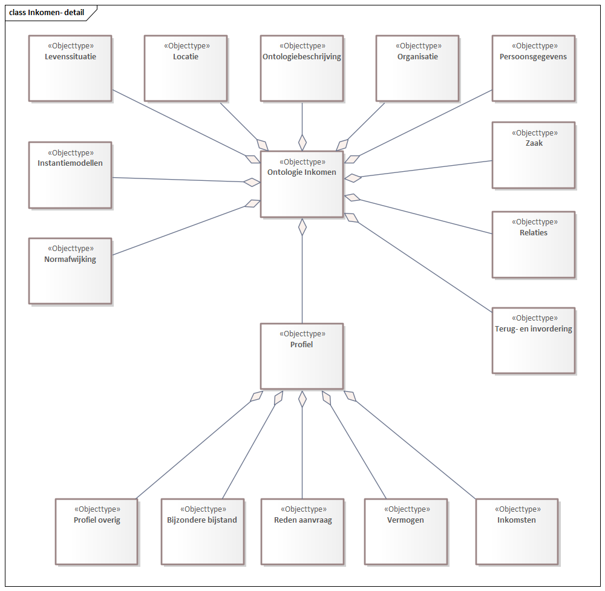

 <h2>Ontologie Inkomen</h2>
            <!--SIM-InkomenModellen-1.0-1-20230101-20240906-094517 imvertor 4.0.0--></p>
         <div class="imageinfo overview"><map name="imagemap-EAID_BE10B4D8_2FFE_4813_9FE9_E95C01985270"><area shape="rect" alt="Normafwijking" coords="813,68,1081,279" href="#global_class_Normafwijking_Normafwijking"><area shape="rect" alt="Maatregel op uitkering" coords="41,506,356,646" href="#global_class_Normafwijking_Maatregelopuitkering"><area shape="rect" alt="Boete" coords="614,304,843,461" href="#global_class_Normafwijking_Boete"><area shape="rect" alt="Afwijkende maatregel" coords="761,498,1060,655" href="#global_class_Normafwijking_Afwijkendemaatregel"><area shape="rect" alt="Maatregel" coords="83,75,313,250" href="#global_class_Normafwijking_Maatregel"></map><p><b>Normafwijking - overzicht</b>
               
               <p></p>
               </p>
         </div>
         <section>
               <ul>
				<li><a class="link" href="https://vng-gbi.github.io/levenssituatie/">Model Levenssituatie</a></li>
				<li><a class="link" href="https://vng-gbi.github.io/Vermogen/">Model Vermogen</a></li>
				<li><a class="link" href="https://vng-gbi.github.io/levenssituatie/">Model Normafwijking</a></li>
               </ul>
          </section>     
               